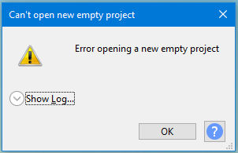
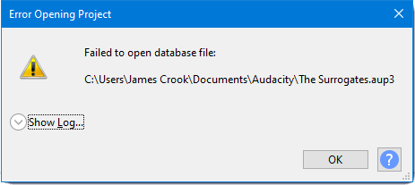
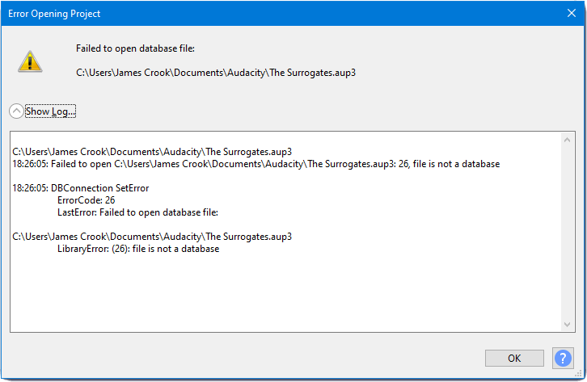

FAQ:Errors on opening or recovering an Audacity project
Contents
- Error opening an AUP3 file in an older version of Audacity
- Error Importing: Aup is an Audacity Project file. Use the File > Open command
- Errors opening a new empty project
- Cryptic system/database error
Error opening an AUP3 file in an older version of Audacity
This error will occur if you try to open an AUP3 project file that was created in a later version of Audacity.
You will need to upgrade to the latest version of Audacity in order to open this project file.
Download latest version of Audacity
Visit the Audacity Download webpage to download the latest version of Audacity.
Error Importing: aup is an Audacity Project file. Use the File > Open command
This error usually occurs because you have attempted to open an Audacity project by using the Import command (which is reserved for audio files).
Instead, you should always use to open an AUP (Audacity Project) file.
If you see "Error Importing" even when using File > Open..., this usually means the AUP file is seriously damaged, has been encoded other than as UTF-8 without BOM, or only contains NULL (zero) data.
The contents are NULL and unusable if you open the AUP file in a text editor like Notepad or TextEdit (on Mac) and see empty contents despite the file being a non-zero size. The AUP file is saved last, so a NULL AUP file can occur if you shut down the computer or close the lid on a laptop before the project is completely saved. Be sure to wait until the Audacity Status Bar says the project is saved, or until all project save progress dialogs have closed, before shutting down the machine.
If the AUP file appears empty, try to use any backup you created, such a different AUP file for an earlier stage of the project, or an exported WAV file. File not saved as UTF-8 without BOM
Using Notepad on Windows to save an AUP file containing Unicode characters as UTF-8 will create this problem because Notepad adds a BOM. To solve it, open the file in Notepad++, choose then save the file. Old versions of Notepad ++ may refer to the required command as Convert to UTF-8 without BOM. If the problem occurred after editing the AUP file in TextEdit on Mac, resave the file as text in Brackets or BBEdit.
Errors opening a new empty project
We don't know exactly what causes this message to happen. It can happen at start up of Audacity, or when creating a new project window.
- 
See FAQ:Errors opening a new empty project for more details.
Cryptic system/database error
In rare situations you may get what looks like a cryptic database error message like the one below.
These messages contain valuable data for the developers to help the resolve the issue.
- 
- Clicking on the Show Log chevron will expand the message to show something like this:
- 
- This is unlikely to mean anything to you as a user, but can be very valuable to our developers, giving them information to aid analyzing the issue.
- So please take a screenshot of the log and send it to us at the Audacity Forum.
| This can normally be resolved by simply exiting Audacity, relaunching and then making the required import of an audio file. |
Errors that you might see
- Project is read only <project name> (Unable to work with the blockfiles)
- Project is locked <project name> (Unable to work with the blockfiles)
- Project is busy <project name> (Unable to work with the blockfiles)
- Project is corrupt <project name> (Unable to work with the blockfiles)
- Some permissions issue <project name> (Unable to work with the blockfiles)
- A disk I/O error <project name> (Unable to work with the blockfiles)
- Not authorized <project name> (Unable to work with the blockfiles)
- Unable to work with the blockfiles
The message may have a button. If it does please press that and send us a screenshot of the full error message with that log, as that will give us valuable data for analysis of the issue.